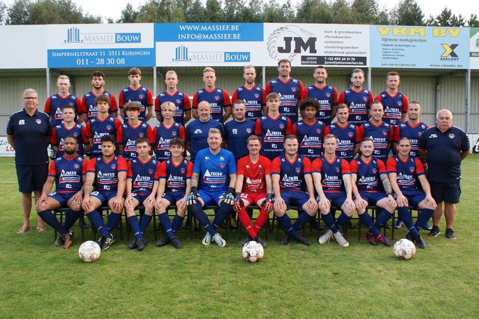

Mijn interesses
Ik ben erg sportief en vertel jullie graag over mijn twee passies:
voetbal en
wintersport.
Daarnaast probeer ik met vrienden ook af en toe te padellen.
Ook houd ik van reizen naar
landen met mooie landschappen en natuur.
Voetbal
Sinds mijn vijfde levensjaar beoefen ik de mooiste sport ter wereld. Vanaf het moment dat ik de bal raakte, werd ik verliefd op het spel. Je vindt me dan ook minstens drie keer per week terug op het veld. Ik heb altijd gespeeld bij KFC Wezel Sport en heb alle jeugdreeksen doorlopen. Soms met succes, soms ook niet, maar altijd met evenveel plezier. Sinds vorig jaar speel ik mee met de nationale beloften van KFC Wezel Sport. Veel pittiger en sneller, maar ook mooier voetbal.
Hier zie je een foto van mijn huidige ploeg.
Ook ben ik fervent supporter van onze nationale ploeg en volg ik verschillende Rode Duivels in het buitenland. Mijn favoriete speler is Kevin De Bruyne en ik probeer regelmatig een wedstrijd op tv mee te pikken.
Kortom, voetbal heeft mijn hart veroverd. Het is niet enkel een spel, het is een deel van wie ik ben. Het heeft me veel bijgeleerd en geeft me plezier, uitdaging en verbinding met anderen.
| Ploeg | Periode | Positie | Niveau |
|---|---|---|---|
|
Wezel Sport |
2010 - 2017 | Centraal middenvelder (8) | Gewestelijk |
| 2018 - ... | Spits (9) | Nationaal |
Wintersport
Minstens één keer per jaar probeer ik me naar de bergen te begeven en
mij uit te leven op het witte goud. Ik beoefen zowel het skiën als het
snowboarden. Laat me niet kiezen, want dat is onmogelijk. Ik kreeg het
skiën met de paplepel mee, want mijn ouders zijn ook fervente
wintersporters. Elke winter gingen we naar dezelfde plek op vakantie,
Serfaus in Oostenrijk. Dat dorp is dan ook een tweede thuis voor
mij.
Hier zie je een foto van mij op skivakantie (deze keer met snowboard).
Dus wat mij betreft, kan het niet snel genoeg winter zijn. Ik tel de dagen af dat ik weer kan vertrekken en de pistes onveilig kan maken.
Reizen
Je kan het niet echt een hobby noemen, want ik kan uiteraard niet elke week op vakantie vertrekken. Maar als het even kan, en als mijn budget het toelaat, trek ik er graag op uit.
Vroeger bestonden mijn zomervakanties uit ofwel wandelvakanties in de bergen of een tiental dagen genieten van het mooie Gardameer.
Volgend jaar staat er echt een droomreis op het programma. Samen met mijn ouders en mijn broer gaan we een drietal weken roadtrippen in het Westen van de Verenigde staten.
EN VOOR HET OVERIGE...
Ik houd van het leven en probeer zo veel mogelijk te genieten. Dat mag al duidelijk zijn uit bovenstaande interesses.Mijn vrienden delen niet echt mijn passies, ze houden van voetbal, maar meer passief. Ze houden meer van après-ski dan van wintersport en op reis gaan doen ze het liefst naar een warm land waar ze 's avonds een goed feestje kunnen bouwen. Je vindt me dus ook vaak bij mijn vrienden.Ik probeer mijn tijd te verdelen tussen de twee (passies en vrienden) en eerlijk, tegen een goed feestje zeg ik nooit neen.